The plant is healthy. Thirteen days went by since 7/19 (day ~46 to day ~59). In that time the tops became much more ripe. Most tops now show orange and brown pistils. The pistils curled back into the buds. The trichome frost is heavy on the sugar leaves. No photo shows a pest, mold, powdery mildew or bud rot. But you cannot make the harvest decision from these photos. The plant is now 3 days past the breeder flower time of ~56 days. You still have no trichome data. Three manual reports in a row (7/13, 7/19, 8/1) record the same gap. Pistil color tells you the plant is late. Only a loupe tells you when to cut. Two new items also appeared this round. The top colas grow pale spires with new white pistils. The sugar leaves on the top colas turned purple. Read the flags below for both. One coverage problem is important: this set has no cross-section photo. The 7/19 set had three. Bud rot starts in the middle of a dense bud. At day ~59 that risk is at its highest, and you did not photograph that area.
Summary. You sent nine photos through Telegram: one top-down canopy, four canopy quadrants (bottom-left, top-left, top-right, bottom-right), one center shot, one side profile, and two close-up shots of top colas. You asked for a manual report. You asked for the report text in Simplified Technical English. You asked for a comparison against the last manual report.
Note on the photo set. The 7/19 set had 9 photos and included 3 cross-section photos. This set also has 9 photos. It replaces the 3 cross-sections with 1 center shot and 2 cola close-ups. The close-ups are good. They give the best trichome view of any manual report. But the loss of the cross-sections removes your only view into the canopy interior. See flag 3.
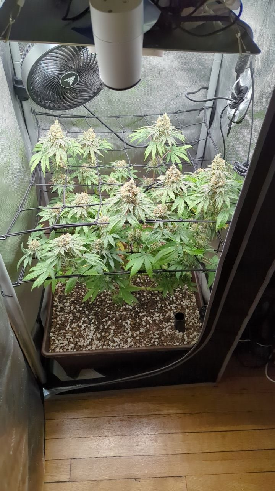
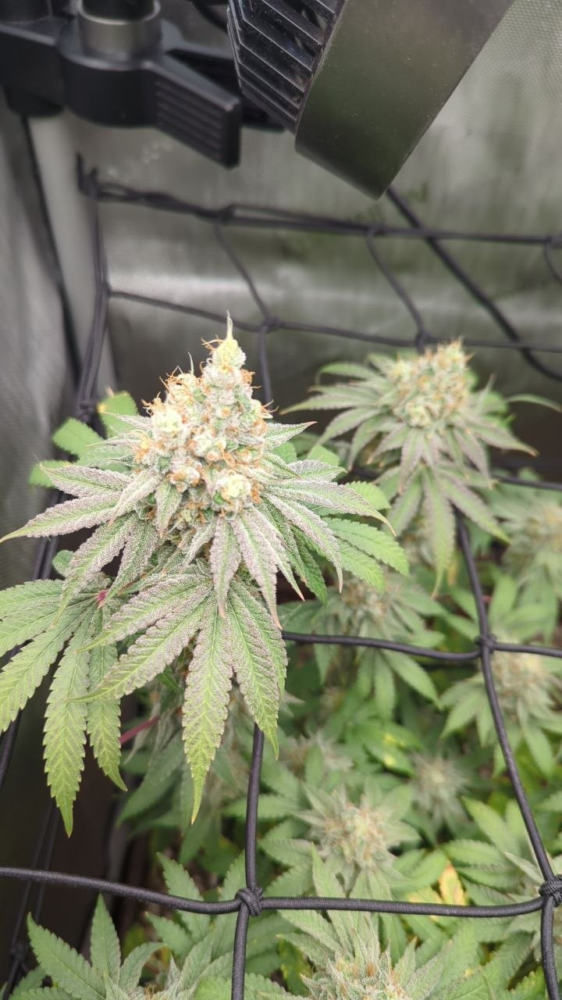
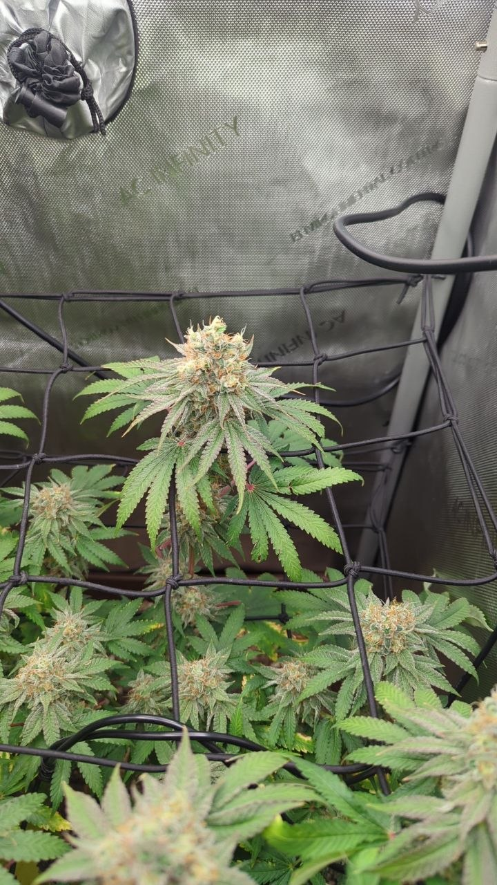
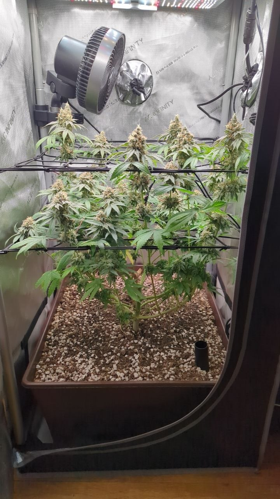
Each row compares the same signal in the two manual reports. The 7/19 report covers day ~46. This report covers day ~59.
| Signal | 7/19 (day ~46) | 8/1 (day ~59) | Trend |
|---|---|---|---|
| Pistil color | Cream and tan on most tops; some amber | Orange and brown on most tops; the pistils curled back into the buds | ↑ more ripe |
| Trichome frost | Heavy | Heavy; the sugar leaves show a gray sheen in both close-ups | ↑ |
| Bud size | Fattening; calyx swell | Larger; the calyxes stacked and the tops are more solid | ↑ |
| Purple color on sugar leaves | None in any frame | Present on the top colas; magenta on the sugar leaves and bract edges | NEW |
| Spire growth at the tops | None seen | Present in both cola close-ups; pale growth with new white pistils | NEW |
| Lower and interior leaf yellowing | Moderate, ~4 of 6 frames | Moderate; the same interior and lower leaves; no climb into the tops | → flat |
| Pests | None in 9 frames | None in 9 frames, and none at macro magnification | → none |
| Mold, mildew, bud rot | None; 3 cross-sections showed the bud bases | None in the visible frames; the canopy interior is not imaged | coverage ↓ |
| Understory | Bare and larfy; open | Bare and larfy; open; no change | → flat |
| Canopy closure | Fully closed | Not comparable — the camera framing changed (see Assumptions) | n/a |
| Soil surface | Dry on top; ~day 3 of the ~4-day cycle | Dry on top; the last logged water is 7/16 (16 days) | log gap |
| Trichome loupe data | None | None | still missing |
| Cola / bud site count | ~32–46 | ~32–46 | → flat |
Method. I counted the distinct flowering tops in the top-down canopy photo. I used the scrog squares as a reference. I then checked the count against the four quadrant photos and the center photo. Overlap and occlusion make an exact count impossible from a photo. Read the trend, not the number.
Result. The count is flat against 7/19. This is the correct result for day ~59. The plant stopped making new bud sites. It now fills the sites it has.
I used the same three methods as the 7/19 report. Each method gives a range. I then triangulated the three ranges.
| Method | Input | Range |
|---|---|---|
| Grams per watt | SF-2000 Pro, ~200 W actual draw; 0.5–0.75 g/W for a good home grow with a bare understory | ~100–150 g |
| Canopy area | 2 × 2 ft = 4 ft²; ~0.9–1.3 oz per ft² for a scrog that fills the top plane only | ~100–145 g |
| Cola count | ~15–20 large tops at ~5–7 g each, plus ~15–25 g of larf | ~90–165 g |
Change against 7/19. The 7/19 estimate was ~90–140 g, with a central figure of ~110 g. This estimate moves up by ~10 g. The buds became visibly larger in 13 days. The move is small because the plant is now past the main bulking phase. Do not expect much more mass.
What limits the yield. The side profile shows the same bare understory as 7/19. The flower mass sits in the top two scrog planes only. The lower branches carry small larf. This caps the upside. A bare understory is the normal result of a scrog, so this is not a fault.
Confidence. Low. All three methods are heuristics, not measurements. Dried weight also depends on the dry and the cure. Weigh the wet flower at the chop. Weigh it again after the dry. That gives you a real number for the next grow.
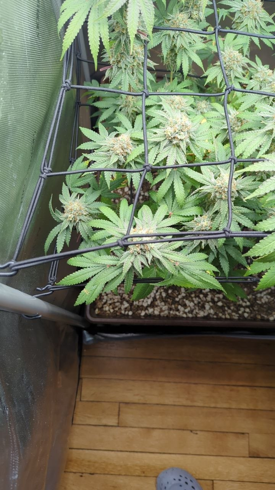
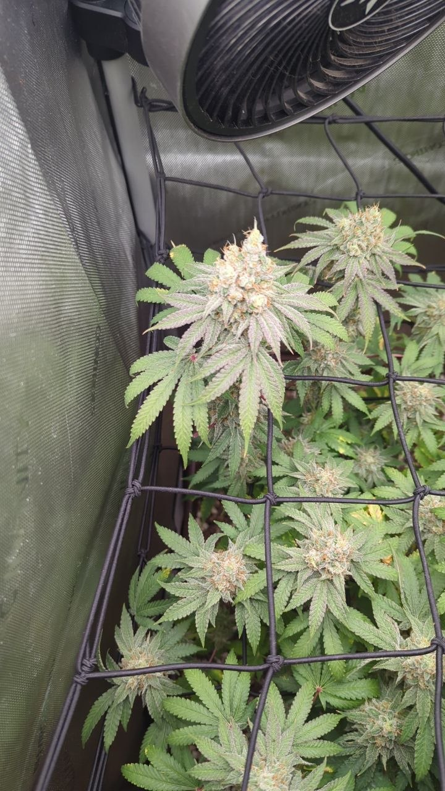
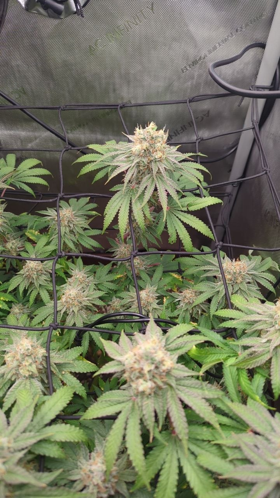
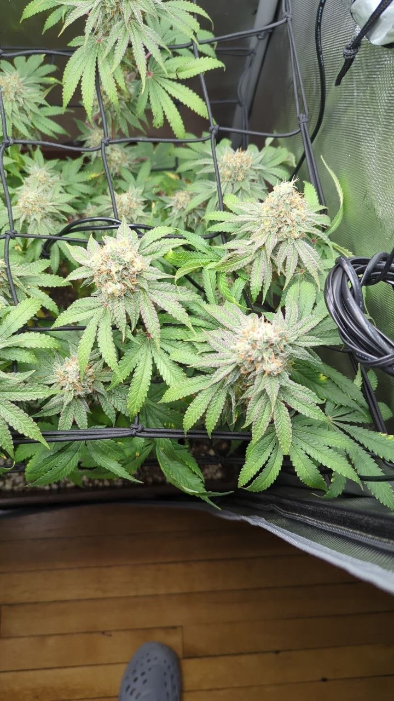
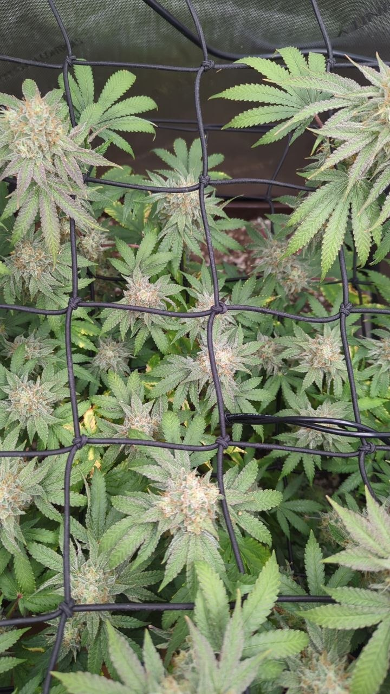
The breeder gives a flower time of ~56 days for Papaya Crush. Today is day ~59. The plant is 3 days past that figure. The pistils tell you the plant is late. They do not tell you when to cut.
The knowledge base is clear on this point. Inspect the trichomes with a loupe or a USB scope at 60–100x. Look at the calyxes, not at the sugar leaf tips. Below ~30x you cannot tell clear from cloudy. Clear means too early. Cloudy means peak THC. Amber means the THC changes to CBN and gives a sedative effect. A common target is ~70–90% cloudy with ~10–30% amber.
This gap is now 3 reports old. The 7/13, 7/19 and 8/1 reports all record it. On 7/19 the report inferred "~1 week to harvest" from pistil color. That week passed 6 days ago. You cannot make the harvest decision from photographs. Get a loupe.
Source: KB 06 · Grow cycle — harvest timing06 · Grow Cycle — What's Normal WhenKnowing the stage prevents false alarms (e.g., late-flower leaf fade is normal, not a deficiency — see 16 · Senescence) and sets expectations. Timelines are typical photoperiod ranges; genetics vary.Covers: Stages · Photoperiod vs Autoflower (critical distinction) · Whole-plant & structural issues (not a leaf symptom) · Harvest timing (trichomes)GrowBuddy knowledge base · 06-grow-cycle.md; strain file — Papaya CrushPapaya CrushBreeder: Bloom Seed Co. · Lineage: Papaya × Bolo Runtz · Type: indica-leaning hybrid · THC: ~25%Covers: Grow facts (sourced) · Diagnostic flags (sourced only) · Assumptions & to-verify (NOT established fact) · Grower notes (external report — r/BloomSeedCompany journal `1rncu6s`, retrieved via browser)GrowBuddy knowledge base · strains/papaya-crush.md.
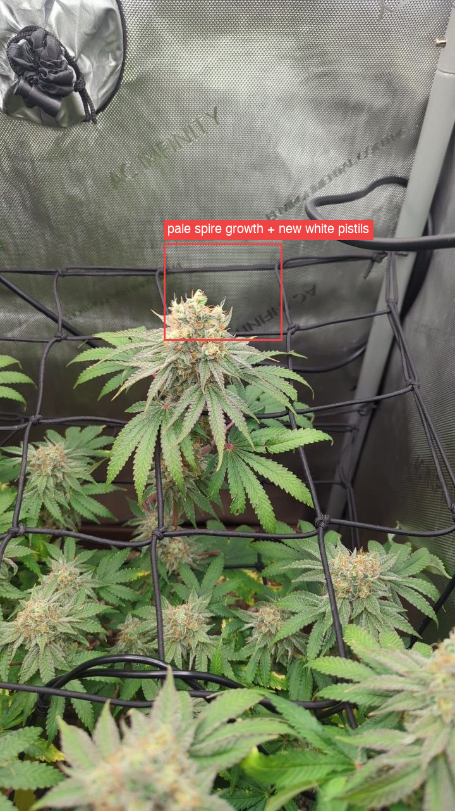
Both cola close-ups show the same thing. A pale spire of new bracts grows out of the top of a ripe bud. The spire carries fresh white pistils. The bud below it carries orange, curled pistils. The knowledge base calls this pattern foxtailing.
The knowledge base splits foxtailing into two causes. Stress foxtail appears only at the tops nearest the light. It looks irregular. The new growth is pale or bleached. It comes with heat or light stress. The triggers are a canopy temperature above ~85–86 °F, or light that is too close or too strong. Genetic foxtail appears evenly across many bud sites. The plant shows no other stress sign. It is benign.
This case matches parts of both. It matches stress foxtail on two points: it appears at the top colas nearest the light, and the new growth is pale. It matches genetic foxtail on three points: no leaf shows tacoing, no leaf shows bleaching, and the canopy stays deep green. There is a third possible cause the knowledge base does not cover: a late pistil flush is common when a plant runs past its finish date, and this plant is past its finish date.
I cannot decide between the three. One measurement decides it. Measure the canopy temperature. No temperature reading exists anywhere in grow_context.md — not one, for the whole grow. If the canopy runs below ~85 °F, stress foxtail is unlikely and you can ignore this. Also measure the PPFD at the two top colas. The last reading was just below 800 on 7/13.
Source: KB 03 · Environmental — foxtailing03 · Environmental Stress & WateringThese cause more "deficiency" misdiagnoses than actual deficiencies. Check here early.Covers: pH & nutrient lockout · Nutrient burn vs light burn vs heat (the big three look-alikes) · Light & heat · Temperature / humidity / VPD by stage · Watering: over vs under vs heat droop · Wind burnGrowBuddy knowledge base · 03-environmental-and-watering.md; KB 10 · Symptom index10 · Symptom Index (reverse lookup)Start here when you have a symptom and want candidates fast. Find the symptom, read the ranked causes, then open the linked file and confirm with the framework. Causes are listed most-likely-first for a typical grow.Covers: Yellowing · Tips & edges · Spots & color · Whole-plant / structural (not a leaf color) · Shape, posture, growth · Holes / eaten tissue (chewing damage — mostly outdoor)GrowBuddy knowledge base · 10-symptom-index.md.
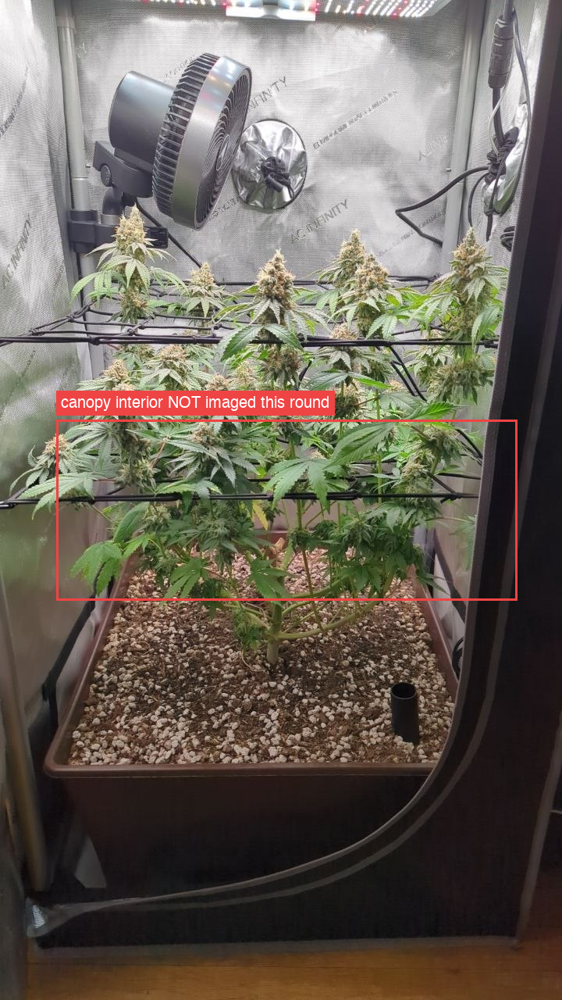
The 7/19 set had three cross-section photos. Those photos showed the bud bases inside the canopy. This set has none. The red box marks the area that no photo in this set shows.
This matters more now than it did on 7/19. Bud rot starts inside a dense bud, at the base, where the air does not move. The bud must be dense before it can start. These buds are at their densest today. The plant is at day ~59 and past its finish date. This is the peak risk point of the whole grow, and it is the one point you did not photograph.
Nothing here says the plant has bud rot. Every surface in all nine photos is clean. But "clean on the outside" is a weak statement about botrytis, because botrytis is an inside problem.
Do this before you decide to harvest. Open the canopy with your hand. Look at the base of the four or five largest colas. Look for gray fuzz, for a brown or mushy spot, and for a single dry leaf that pulls out of the bud. Squeeze a top gently — a rotten core feels soft. If you find rot, cut that cola out at once and check the ones next to it.
Source: KB 05 · Diseases05 · Diseases (Mold, Rot, Mildew)Fungal problems are mostly an environment story: humidity, temperature, and airflow. Prevention beats treatment because by the time buds are affected, that material is usually lost.Covers: Bud rot / Botrytis (the dangerous one in flower) · Powdery mildew (PM) · Leaf septoria (yellow leaf spot) — outdoor · Root rot (Pythium) · Prevention (covers all three)GrowBuddy knowledge base · 05-diseases.md.
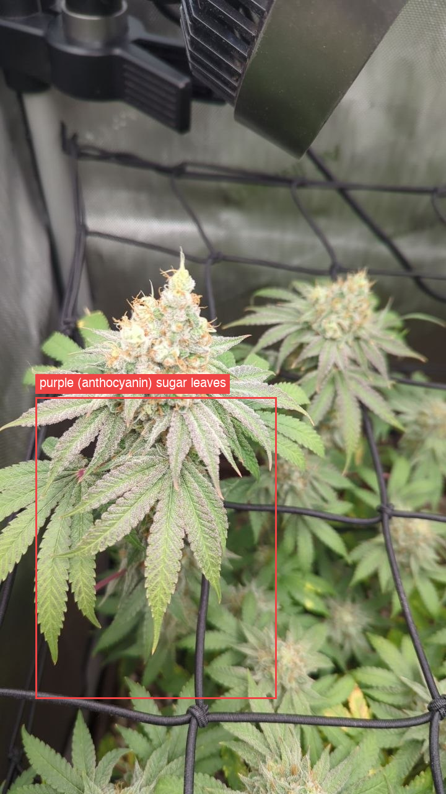
The sugar leaves on the top colas turned purple and magenta. The 7/19 photos show no purple color. This is new in 13 days.
This is anthocyanin. The knowledge base treats purple on whole leaf blades as benign in most cases. The two normal causes are genetics and cool night temperatures. Late flower is the usual time for it. The framework says one rule clearly: never name a cause from color alone. A phosphorus deficiency can also purple a plant, but it comes with dull or spotted lower leaves and a growth stall. This plant shows neither.
The strain file adds one point. The Papaya parent shows "subtle violet hues" under cooler nights, per Strainpedia. That is documented for the parent. It is not confirmed for Papaya Crush. One grower report on this strain said "no purple stems", but that is one data point.
Read this as normal late-flower color. Do not treat it. One thing is worth a thought: if cool nights caused it, your night temperature changed in the last 13 days. You have no temperature log, so you cannot check this. That is the same missing measurement as flag 2.
Source: KB 01 · Diagnosis framework01 · Diagnosis FrameworkThe method for turning "something looks off" into a calibrated diagnosis. Work the steps in order; do not jump to a nutrient name from leaf color alone.Covers: Step 0 — Gather context (decides most cases) · Step 1 — Rule out pH / lockout and watering FIRST · Step 2 — Localize the symptom (mobile vs immobile) · Step 3 — Characterize the pattern · Step 4 — Disambiguate look-alikes · Step 5 — Output: diagnosis, confidence, assumptions, sourcesGrowBuddy knowledge base · 01-diagnosis-framework.md; KB 03 · Environmental03 · Environmental Stress & WateringThese cause more "deficiency" misdiagnoses than actual deficiencies. Check here early.Covers: pH & nutrient lockout · Nutrient burn vs light burn vs heat (the big three look-alikes) · Light & heat · Temperature / humidity / VPD by stage · Watering: over vs under vs heat droop · Wind burnGrowBuddy knowledge base · 03-environmental-and-watering.md; strain filePapaya CrushBreeder: Bloom Seed Co. · Lineage: Papaya × Bolo Runtz · Type: indica-leaning hybrid · THC: ~25%Covers: Grow facts (sourced) · Diagnostic flags (sourced only) · Assumptions & to-verify (NOT established fact) · Grower notes (external report — r/BloomSeedCompany journal `1rncu6s`, retrieved via browser)GrowBuddy knowledge base · strains/papaya-crush.md.
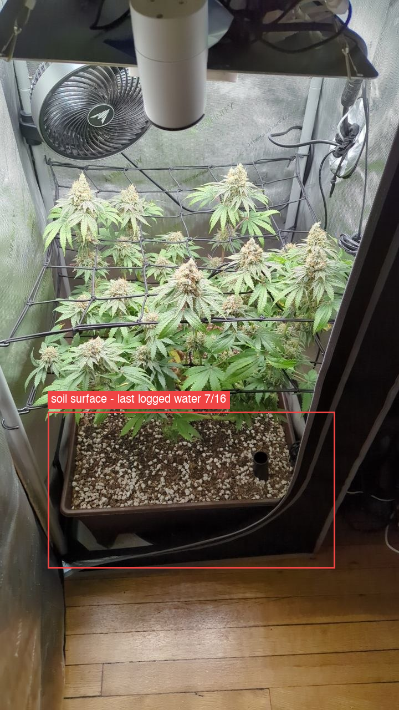
The last watering in grow_context.md is 7/16. That was 16 days ago. The normal cycle in this tent is ~4 days.
The plant does not look thirsty. No leaf droops. No leaf claws. The fan leaves are flat and green. A plant in a 2×2 pot does not go 16 days without water in late flower and look like this. So you almost certainly watered the plant and did not write it down.
The problem is the record, not the plant. The daily report reads this file on every run. A missing water date makes every soil-moisture read wrong. Write each watering into the change log on the day you do it. Record the date, the volume and the method.
The soil surface reads dry in the red box. Do the finger test before the next water. Push a finger 2 inches into the soil. Water if it is dry at that depth. Also lift the pot — weight is the better test.
Source: KB 03 · Environmental and watering03 · Environmental Stress & WateringThese cause more "deficiency" misdiagnoses than actual deficiencies. Check here early.Covers: pH & nutrient lockout · Nutrient burn vs light burn vs heat (the big three look-alikes) · Light & heat · Temperature / humidity / VPD by stage · Watering: over vs under vs heat droop · Wind burnGrowBuddy knowledge base · 03-environmental-and-watering.md.
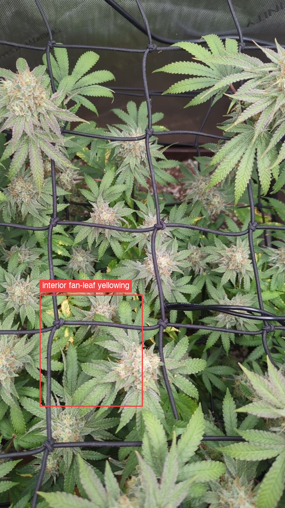
The interior and lower fan leaves continue to turn yellow. The level is moderate. It matches 7/19. It did not get worse and it did not climb into the tops.
The knowledge base gives four tests for natural senescence. This case passes all four. Late: day ~59, past the breeder finish date. Bottom-up: only old, low, shaded leaves; every cola and every growing point stays green. Slow: the same moderate level across three reports over 19 days. Ripeness advances in parallel: the pistils ripened strongly in the same period.
This report tracked this item since 7/1 as a watch item. It was a possible potassium draw on 7/13. Close it. At day ~59 with this much pistil ripening, the senescence read is strong. A living soil plant finishes itself. Do not feed it. Do not flush it — living soil holds no salt reservoir to flush.
One limit: this set has no macro photo of a single yellow leaf, so I could not re-check the 7/13 serration-margin pattern at leaf level. Two sets in a row now lack that shot. It no longer changes the action, because the action is "do nothing" either way.
Source: KB 16 · Senescence16 · Senescence (natural fade) — and how to tell it from a problemLate-life yellowing of a cannabis plant is often not a deficiency. It is senescence: an evolved, age-programmed shutdown in which the plant strips nutrients out of old leaves and moves them into the buds. The diagnostic problem is that senescence and a real deficiency share the same mechanism and the same look, so the…Covers: What senescence actually is (mechanism) · Timeline by plant age · Distinguishing senescence from the look-alikes · Deliberate "fade" / flushing — folklore vs evidence · Age-based decision rulesGrowBuddy knowledge base · 16-senescence.md; KB 07 · Organic living soil07 · Organic / Living Soil / No-TillA living-soil grow is a different system from bottled-nutrient growing, and most generic diagnosis advice gives the wrong fix here. If the grow is living soil / no-till, read this before recommending anything.Covers: The core idea · How feeding/correcting works (and what NOT to say) · Diagnosis differences in living soil · Practical no-till setup & routine (real-world basics) · Practical rule for the diagnoserGrowBuddy knowledge base · 07-organic-living-soil.md.
I examined all nine photos. I also examined magnified crops of the two cola close-ups. I found none of the following:
Read this result with flag 3. It covers the outside of the canopy only.
Source: KB 04 · Pests04 · PestsMost pests are easiest to catch on leaf undersides and in new growth; a jeweler's loupe or USB microscope (60–100x) is essential for the microscopic ones. Early signs: stippling/speckling, curled or twisted new growth, sticky residue, webbing, or tiny moving dots.Covers: Spider mites (most common, most feared) · Broad mites & russet mites (microscopic, often misdiagnosed) · Thrips · Fungus gnats · Aphids · WhitefliesGrowBuddy knowledge base · 04-pests.md; KB 05 · Diseases05 · Diseases (Mold, Rot, Mildew)Fungal problems are mostly an environment story: humidity, temperature, and airflow. Prevention beats treatment because by the time buds are affected, that material is usually lost.Covers: Bud rot / Botrytis (the dangerous one in flower) · Powdery mildew (PM) · Leaf septoria (yellow leaf spot) — outdoor · Root rot (Pythium) · Prevention (covers all three)GrowBuddy knowledge base · 05-diseases.md.
These are inferences, not observed facts. Each one could change the report if it is wrong.
grow_context.md. I count ~13.5 weeks from the 4/28 germination date. Both dates come from that file.grow_context.md for the whole grow. Flags 2 and 4 both need a temperature reading and cannot close without one.Knowledge base files used: 01 · Diagnosis framework01 · Diagnosis FrameworkThe method for turning "something looks off" into a calibrated diagnosis. Work the steps in order; do not jump to a nutrient name from leaf color alone.Covers: Step 0 — Gather context (decides most cases) · Step 1 — Rule out pH / lockout and watering FIRST · Step 2 — Localize the symptom (mobile vs immobile) · Step 3 — Characterize the pattern · Step 4 — Disambiguate look-alikes · Step 5 — Output: diagnosis, confidence, assumptions, sourcesGrowBuddy knowledge base · 01-diagnosis-framework.md · 03 · Environmental and watering03 · Environmental Stress & WateringThese cause more "deficiency" misdiagnoses than actual deficiencies. Check here early.Covers: pH & nutrient lockout · Nutrient burn vs light burn vs heat (the big three look-alikes) · Light & heat · Temperature / humidity / VPD by stage · Watering: over vs under vs heat droop · Wind burnGrowBuddy knowledge base · 03-environmental-and-watering.md · 04 · Pests04 · PestsMost pests are easiest to catch on leaf undersides and in new growth; a jeweler's loupe or USB microscope (60–100x) is essential for the microscopic ones. Early signs: stippling/speckling, curled or twisted new growth, sticky residue, webbing, or tiny moving dots.Covers: Spider mites (most common, most feared) · Broad mites & russet mites (microscopic, often misdiagnosed) · Thrips · Fungus gnats · Aphids · WhitefliesGrowBuddy knowledge base · 04-pests.md · 05 · Diseases05 · Diseases (Mold, Rot, Mildew)Fungal problems are mostly an environment story: humidity, temperature, and airflow. Prevention beats treatment because by the time buds are affected, that material is usually lost.Covers: Bud rot / Botrytis (the dangerous one in flower) · Powdery mildew (PM) · Leaf septoria (yellow leaf spot) — outdoor · Root rot (Pythium) · Prevention (covers all three)GrowBuddy knowledge base · 05-diseases.md · 06 · Grow cycle06 · Grow Cycle — What's Normal WhenKnowing the stage prevents false alarms (e.g., late-flower leaf fade is normal, not a deficiency — see 16 · Senescence) and sets expectations. Timelines are typical photoperiod ranges; genetics vary.Covers: Stages · Photoperiod vs Autoflower (critical distinction) · Whole-plant & structural issues (not a leaf symptom) · Harvest timing (trichomes)GrowBuddy knowledge base · 06-grow-cycle.md · 07 · Organic living soil07 · Organic / Living Soil / No-TillA living-soil grow is a different system from bottled-nutrient growing, and most generic diagnosis advice gives the wrong fix here. If the grow is living soil / no-till, read this before recommending anything.Covers: The core idea · How feeding/correcting works (and what NOT to say) · Diagnosis differences in living soil · Practical no-till setup & routine (real-world basics) · Practical rule for the diagnoserGrowBuddy knowledge base · 07-organic-living-soil.md · 10 · Symptom index10 · Symptom Index (reverse lookup)Start here when you have a symptom and want candidates fast. Find the symptom, read the ranked causes, then open the linked file and confirm with the framework. Causes are listed most-likely-first for a typical grow.Covers: Yellowing · Tips & edges · Spots & color · Whole-plant / structural (not a leaf color) · Shape, posture, growth · Holes / eaten tissue (chewing damage — mostly outdoor)GrowBuddy knowledge base · 10-symptom-index.md · 11 · Photo and triage guide11 · Photo, Triage & Confidence GuideHow to get a good diagnosis, how urgent it is, and how sure to be. Use this to decide what to ask for and how to caveat the answer.Covers: What photo(s) actually enable a diagnosis · Triage: how urgent is it? · Confidence calibration · Hard don'tsGrowBuddy knowledge base · 11-photo-and-triage-guide.md · 16 · Senescence16 · Senescence (natural fade) — and how to tell it from a problemLate-life yellowing of a cannabis plant is often not a deficiency. It is senescence: an evolved, age-programmed shutdown in which the plant strips nutrients out of old leaves and moves them into the buds. The diagnostic problem is that senescence and a real deficiency share the same mechanism and the same look, so the…Covers: What senescence actually is (mechanism) · Timeline by plant age · Distinguishing senescence from the look-alikes · Deliberate "fade" / flushing — folklore vs evidence · Age-based decision rulesGrowBuddy knowledge base · 16-senescence.md · strains/papaya-crushPapaya CrushBreeder: Bloom Seed Co. · Lineage: Papaya × Bolo Runtz · Type: indica-leaning hybrid · THC: ~25%Covers: Grow facts (sourced) · Diagnostic flags (sourced only) · Assumptions & to-verify (NOT established fact) · Grower notes (external report — r/BloomSeedCompany journal `1rncu6s`, retrieved via browser)GrowBuddy knowledge base · strains/papaya-crush.md
Comparison report: manual-report-20260719/report.html (published as growdaily/2026-07-19-091153).
External sources (through the knowledge base, not fetched again for this report): breeder listing for the ~56-day flower time and the ~475 g/m² yield figure — BlackBuffalo; trichome harvest timing — GrowWeedEasy, Spider Farmer; foxtailing — GrowWeedEasy, Humboldt Seed Company; Papaya parent violet hues — Strainpedia.
The plant is healthy and it is ripe. In 13 days it moved from "ripening" to "at or past the finish line". The pistils ripened strongly across every quadrant. The buds got larger and the frost got heavier. No pest, no mold and no rot shows in any of the nine photos. The lower-leaf yellowing that this report tracked since 7/1 is now clearly normal senescence, and you can close it.
The problem is not the plant. The problem is that you have run out of the information you need. The plant is past its breeder finish date. Pistil color cannot set a harvest date, and pistil color is all you have. This is the third report in a row that says the same thing. The one action that matters this week costs about ten dollars: buy a loupe.
Two smaller items follow from the same missing data. The pale spires at the top colas could be light or heat stress, or they could be a normal late flush — a canopy temperature reading decides it, and no temperature reading exists for this grow. The new purple color is almost certainly benign, but the same reading would confirm it.
One coverage note for the next set. Keep the two cola close-ups; they are the best photos any manual report has had. But add the cross-sections back. At day ~59 with dense buds, the inside of the canopy is the one place a problem can hide, and this set does not show it.
grow_context.md. This closes flag 2 and it confirms flag 4. No temperature reading exists for this grow.{kind=link}
{kind=link}
{kind=link}
{kind=link}
{kind=link}
{kind=link}
{kind=link}
{kind=link}
{kind=link}